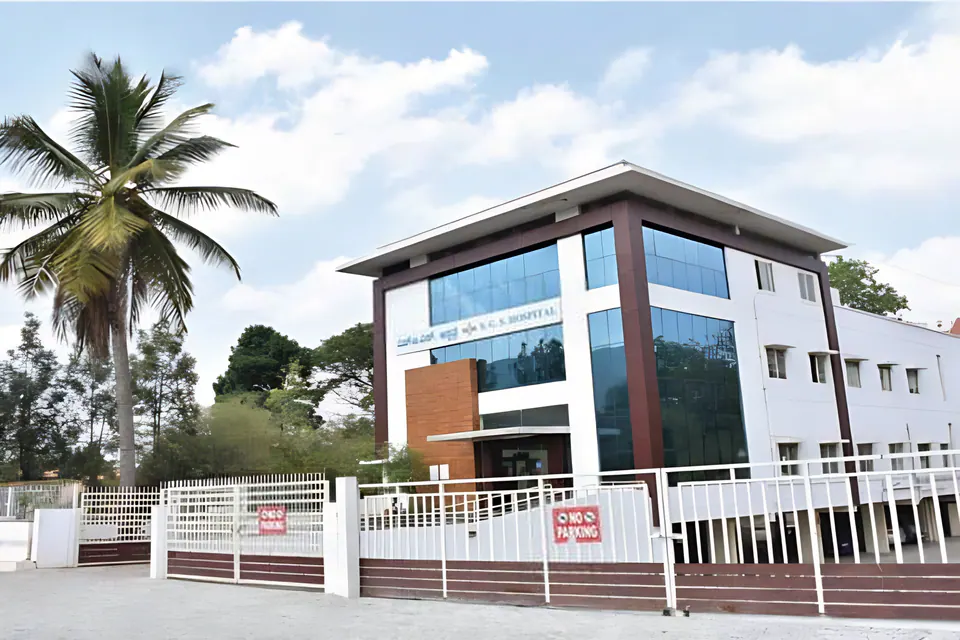

मंदिर दर्शन
- सुबह
- सुबह 6:00 – दोपहर 12:00 बजे
- शाम
- शाम 4:00 – रात 8:00 बजे
ध्वनि
बाँसुरी: इस वेबसाइट के लिए मौलिक राग रचना
राग पहाड़ी

मैसूरु के शांत शहर में एक निर्मल आध्यात्मिक गंतव्य। आश्रम कैसे पहुँचें, कब आएँ, कहाँ ठहरें और आसपास क्या देखें।
अवधूत दत्त पीठम् में सभी धर्मों के लोगों का स्वागत है।

अवधूत दत्त पीठम्, जिसे लोकप्रिय रूप से श्री गणपति सच्चिदानंद आश्रम कहा जाता है, राजनगरी मैसूरु में चामुंडी पहाड़ी की तलहटी में 40 एकड़ के विस्तृत परिसर में स्थित है।
आगमन पर आगंतुक एक शांत और पवित्र वातावरण में डूब जाते हैं, जो वैदिक ऋचाओं के मधुर मंत्रोच्चार से गूँजता रहता है। आश्रम के शांत वातावरण में पूरी तरह रम जाने के लिए आगंतुकों को आश्रम के मार्गदर्शित भ्रमण में शामिल होने के लिए प्रोत्साहित किया जाता है।
मंदिर दर्शन हर दिन सुबह और शाम खुला रहता है। सभी समय भारतीय मानक समय में हैं और उत्सव के दिनों में बदल सकते हैं, इसलिए यात्रा से पहले आधिकारिक कैलेंडर अवश्य देखें।
कार्यसिद्धि हनुमान मंदिर में अगला अनुष्ठान: अभिषेक सुबह 7 बजे · आरती शाम 6 बजे


नगर में होने पर श्री स्वामीजी या श्री बाल स्वामीजी प्रातःकालीन श्रीचक्र पूजा करते हैं। इसके बाद तीर्थ (पवित्र जल) प्रदान किया जाता है।
विश्व प्रार्थना भवन में एकत्रित भक्तजन दत्त क्रिया योग का अभ्यास करते हैं, जिसमें कोई प्राणायाम या मुद्रा शामिल होती है।
श्रीचक्र पूजा, होम और तैलाभिषेक जैसे अनुष्ठानों में भाग लें और उन्हें प्रायोजित करें।
श्री बाल स्वामीजी प्रतिदिन कन्नड़ और तेलुगु में योग वासिष्ठम् पर प्रवचन देते हैं।
श्री स्वामीजी और आश्रम के वरिष्ठ सदस्यों के नेतृत्व में कम से कम डेढ़ घंटे तक भजन।
नगर में होने पर श्री स्वामीजी भक्तों को दर्शन देते हैं। रविवार को बड़ी संख्या में भक्तजन दूर-दूर से उनके साथ भजन गाने आते हैं।
स्रोत: आश्रम जीवन, dattapeetham.org
पहली यात्रा के लिए पीठम् बेंगलुरु तक हवाई यात्रा और वहाँ से सड़क मार्ग द्वारा मैसूरु पहुँचने की सलाह देता है। मैसूरु में आश्रम रेलवे स्टेशन और सिटी बस स्टैंड से थोड़ी ही दूरी पर है।
पहली यात्रा के लिए पीठम् कर्नाटक में बेंगलुरु तक सीधी उड़ान, या मुंबई, दिल्ली अथवा चेन्नई से कनेक्टिंग उड़ान लेने की सलाह देता है।
हवाई अड्डे के आगमन कक्ष में टैक्सी काउंटरों से सीधे मैसूरु के लिए टैक्सी लें। रात 9 बजे के बाद बेंगलुरु से मैसूरु तक सड़क यात्रा की सलाह नहीं दी जाती।
रेलवे स्टेशन या सिटी बस स्टैंड से बस 119 या 119A, ऑटो रिक्शा या कैब लें: लगभग 15 से 30 मिनट।
श्री गणपति सच्चिदानंद आश्रम। द्वार रात 11 बजे बंद हो जाते हैं, इसलिए यदि आप देर रात पहुँचें तो कृपया किसी होटल में ठहरें।
पीठम् द्वारा बताए गए अनुमानित किराए और समय।
रेलवे स्टेशन के बाहर आसानी से उपलब्ध। किराया दिन के समय और यातायात की स्थिति पर निर्भर करता है।
ओला या उबर जैसी ऐप-आधारित सेवाओं से, या रेलवे स्टेशन और बस स्टैंड के बाहर स्थानीय टैक्सी स्टैंड से।
केएसआरटीसी बसें रेलवे स्टेशन के पास स्थित मैसूरु सिटी बस स्टैंड से चलती हैं। ऊटी रोड / नंजनगूड रोड की ओर जाने वाली या आश्रम मार्ग की बसें देखें।
मैसूरु सिटी बस स्टैंड से · लगभग ₹10 – ₹20
आश्रम तक सीधा मार्ग, जो इसे भक्तों के लिए सबसे सुविधाजनक विकल्प बनाता है।
यह भी सीधे आश्रम जाती है, पर रास्ते में कुछ अधिक स्टॉप पर रुकती है।
आश्रम के पास से गुज़रती है। निकटतम स्टॉप से आपको थोड़ी दूर पैदल चलना या ऑटो रिक्शा लेना पड़ सकता है।
स्रोत: आगंतुकों के लिए दिशानिर्देश, dattapeetham.org
मैसूरु आश्रम के एक चित्रात्मक नक्शे पर प्रमुख स्थानों, मंदिरों, सुविधाओं और आकर्षणों को देखें। मानचित्र पर या सूची से कोई स्थान चुनें; सुनहरी रेखा हनुमद्द्वारम् से देवस्थानों तक का दर्शन-पथ दिखाती है।
हनुमान विग्रहों से सुसज्जित भव्य स्वागत द्वार।
आगंतुक भव्य हनुमद्द्वारम् से प्रवेश करते हैं, जो हनुमान विग्रहों से युक्त एक सुंदर नक्काशीदार स्वागत द्वार है। इसके ठीक आगे भगवान दत्तात्रेय के बाल रूप की एक बारीक नक्काशी उनका स्वागत करती है।
स्रोत: dattapeetham.org366 स्तंभ, प्रत्येक जन्मतिथि के लिए एक।
आश्रम में एक पथ के दोनों ओर 366 स्तंभ खड़े हैं। “जन्मतिथि स्तंभ” कहलाने वाले इन स्तंभों में से प्रत्येक पर उस विशेष दिन के देवता और उपदेवता अंकित हैं।
स्रोत: dattapeetham.org
प्रधान देवता के समक्ष प्रतिदिन सामूहिक प्रार्थनाएँ।
यहाँ श्री स्वामीजी की दिव्य उपस्थिति में प्रतिदिन सामूहिक प्रार्थनाएँ होती हैं। इस भवन में पीठम् के प्रधान देवता कालाग्नि शमन दत्तात्रेय विराजमान हैं, उनके पास श्रीचक्र मेरु है, और दोनों ओर पंचायतन देवस्थान तथा सच्चिदानंदेश्वर शिवालय हैं।
स्रोत: dattapeetham.org
नवदुर्गा और 18 शक्तिपीठों की देवियाँ।
श्री स्वामीजी ने 28 दिसंबर 2023 को विश्व प्रार्थना भवन के पास इसकी प्राण-प्रतिष्ठा की। देवी के चारों ओर नवदुर्गा, 18 शक्तिपीठों की देवियों के लघु रूप, और एक विशाल श्रीचक्र है, जहाँ भक्तजन कुंकुम अर्चना करते हैं।
स्रोत: dattapeetham.org
अनंतनाग शयन रूप में 2,108 दुर्लभ शालग्राम।
राजराजेश्वरी मंदिर के ठीक दाईं ओर स्थित इस सन्निधि में अनंतनाग शयन रूप में 2,108 दुर्लभ शालग्राम हैं, साथ ही 300 किलो वज़न वाले त्रिविक्रम और मनोरथ कूर्म शालग्राम भी हैं। श्री स्वामीजी द्वारा परिकल्पित एक सुदर्शन यंत्र सन्निधि के शिखर पर सुशोभित है।
स्रोत: dattapeetham.orgपद्मावती, धन्वंतरि और अन्य देवताओं के साथ भगवान वेंकटेश्वर।
यहाँ भक्तजन श्री दत्त वेंकटेश्वर स्वामी, देवी पद्मावती, धन्वंतरि, सर्वदोषहर शिव, श्री मरकत सुब्रह्मण्य स्वामी, भगवान कार्यसिद्धि हनुमान और नवग्रह देवताओं की पूजा करते हैं। हर वर्ष वैकुंठ एकादशी पर हज़ारों भक्तजन यहाँ आते हैं।
स्रोत: dattapeetham.orgजैसा कि श्री दत्त वेंकटेश्वर मंदिर पृष्ठ पर दिया गया है।

70 फ़ुट ऊँची एकाश्म प्रतिमा, भारत में हनुमान की सबसे ऊँची पाषाण प्रतिमा।
श्री स्वामीजी ने 2012 में इसकी प्राण-प्रतिष्ठा की। 70 फ़ुट ऊँची यह एकाश्म प्रतिमा भारत में हनुमान की सबसे ऊँची पाषाण प्रतिमा है। सप्ताहांत में हनुमान चालीसा के साथ तालमेल में 3डी प्रोजेक्शन मैपिंग प्रस्तुत की जाती है।
स्रोत: dattapeetham.orgभूमिगत देवस्थान में आठ भैरव।
आश्रम के दक्षिण-पूर्वी कोने में शैव आगम विधि के अनुसार प्राण-प्रतिष्ठित आठ भैरव विग्रह। इस भूमिगत मंदिर में प्रधान भैरव का मुख्य देवस्थान है, और शेष सात उनके चारों ओर आलों में विराजमान हैं।
स्रोत: dattapeetham.org
दिव्य संगीत का सभागार, जिसका उद्घाटन श्री स्वामीजी ने 1998 में किया।
ताड़पत्र के पंखे के आकार में विशेष रूप से निर्मित एक संगीत सभागार, जिसका प्रवेश द्वार पूर्व में चामुंडी पहाड़ियों की ओर है। इसमें 22 श्रुतियों के लिए 22 नक्काशीदार तंबूरे, 72 मेलकर्ता रागों के लिए 72 स्तंभ और विश्व का पहला सप्त स्वर देवता मंटपम् है।
स्रोत: dattapeetham.org
486 प्रजातियों के 2,000+ पक्षियों वाला खुला पक्षी उद्यान।
श्री स्वामीजी ने 2012 में इसकी स्थापना की, और इसका अपना पक्षी अस्पताल है। इस मुक्त उड़ान वाली, भीतर घूमकर देखी जा सकने वाली पक्षीशाला में 486 प्रजातियों के 2,000 से अधिक पक्षी रहते हैं। इसका गिनीज़ वर्ल्ड रिकॉर्ड (6 मई 2017) एक पक्षीशाला में सर्वाधिक पक्षी प्रजातियों के लिए है; प्रमाणपत्र में 468 दर्ज हैं।
स्रोत: dattapeetham.orgबुधवार को बंद। आधिकारिक स्रोतों में समय अलग-अलग दिए गए हैं, और शुक वन पृष्ठ के अनुसार यह रखरखाव के लिए अस्थायी रूप से बंद है; कृपया आने से पहले आश्रम से पुष्टि कर लें।

प्राच्य शैली के उद्यान में 450 से अधिक लघु वृक्ष।
प्राच्य उद्यान शैली में 450 से अधिक सावधानी से आकार दिए गए लघु वृक्ष, जिनका पोषण स्वयं श्री स्वामीजी ने किया है। जड़ी-बूटियों से उपचार के अधिष्ठाता देवता मूलिकेश्वर यहाँ नवग्रह, सप्तर्षि, नक्षत्र और राशि उद्यानों के बीच विराजमान हैं।
स्रोत: dattapeetham.orgबुधवार को बंद। समय बोन्साई उद्यान पृष्ठ से लिया गया है। आधिकारिक स्रोतों में समय अलग-अलग दिए गए हैं; कृपया आने से पहले आश्रम से पुष्टि कर लें।

विश्व भर के भक्तों द्वारा श्री स्वामीजी को भेंट किए गए दुर्लभ उपहार।
“विश्वम्” का अर्थ है “ब्रह्मांड”। इस संग्रहालय में वे दुर्लभ उपहार प्रदर्शित हैं जो श्री स्वामीजी को विश्व भर के भक्तों से मिले हैं, स्फटिक और खनिजों से लेकर प्राचीन वस्तुओं तक, साथ ही उनका डाक टिकट संग्रह (1835 तक पुराने नमूनों सहित) और चालीस से अधिक देशों के वाद्य यंत्र।
स्रोत: dattapeetham.org2006 में विश्वम् संग्रहालय के साथ उद्घाटन हुआ।
आश्रम परिसर में एक सरोवर (तालाब), जिसका उद्घाटन 2006 में हुआ, उसी वर्ष जब विश्वम् संग्रहालय का उद्घाटन हुआ।

पॉलीक्लिनिक में निःशुल्क परामर्श और दवाइयाँ।
आयुर्वेद, एलोपैथी, होम्योपैथी, प्राकृतिक चिकित्सा और अन्य चिकित्सा पद्धतियों में बाह्य रोगी सेवाएँ, साथ ही एलोपैथी पॉलीक्लिनिक में निःशुल्क परामर्श, काउंसलिंग और दवाइयाँ। यहाँ हर महीने 5,000–10,000 लोगों की सेवा की जाती है।
स्रोत: dattapeetham.org
गुरुकुल पद्धति में चारों वेद और संस्कृत।
पारंपरिक गुरुकुल पद्धति में चारों वेदों और संस्कृत की कक्षाएँ। यहाँ लगभग 120 विद्यार्थी वैदिक शिक्षा प्राप्त कर रहे हैं।
स्रोत: dattapeetham.org
50 से अधिक गायों की देखभाल, और गौ पूजा।
श्री स्वामीजी ने मैसूरु आश्रम में एक विशाल गोशाला की स्थापना की है, जो 50 से अधिक गायों को आश्रय देती है और उनकी देखभाल करती है। भक्तजन यहाँ गौमाता की उपासना, अर्थात् गौ पूजा, कर सकते हैं।
आश्रम में सुविधाएँ सीमित हैं और मुख्य रूप से श्री स्वामीजी के भक्तों के लिए रखी जाती हैं। पीठम् के ये दिशानिर्देश हर यात्रा को सुगम बनाने में सहायक हैं।
स्रोत: आगंतुकों के लिए दिशानिर्देश, dattapeetham.org
अवधूत दत्त पीठम् में सभी धर्मों के लोगों का स्वागत है। फिर भी, सुविधाएँ सीमित हैं और मुख्य रूप से परम पूज्य श्री श्री श्री गणपति सच्चिदानंद स्वामीजी के भक्तों के ठहरने के लिए रखी जाती हैं।
इसलिए आगंतुकों से अनुरोध है कि वे मैसूरु शहर में होटल में ठहरें और आश्रम के कार्यक्रमों और गतिविधियों में भाग लेने के लिए प्रतिदिन आश्रम आएँ। आश्रम के पास के होटल देखें।
जो लोग आश्रम परिसर में कुछ समय ठहरना चाहते हैं, उन्हें ठहरने के बारे में पूछताछ करने से पहले कम से कम एक सप्ताह या उससे अधिक समय तक नियमित रूप से आश्रम के कार्यक्रमों में भाग लेना चाहिए। ऐसी पूछताछ आश्रम प्रशासक देखते हैं।
आश्रम के कर्मचारियों और श्री स्वामीजी के परिचित लोगों को भी आश्रम आने और ठहरने की व्यवस्था करने से पहले अनुमति ले लेनी चाहिए। अनुमति के लिए अपनी यात्रा योजना से काफ़ी पहले पत्र, फ़ोन, फ़ैक्स या ईमेल द्वारा श्री स्वामीजी के निजी सचिव एच. वी. प्रसाद से अनुरोध किया जा सकता है।
अपनी योजना तय हो जाने पर आश्रम को अपने आगमन की तिथि, अपने दल के सदस्यों की संख्या और ठहरने की अनुमानित अवधि की सूचना दें। संपर्क विवरण।
कृपया अपने परिवार या समूह के प्रत्येक सदस्य के लिए सरकार द्वारा मान्य पहचान-पत्र या पासपोर्ट की फ़ोटोकॉपी, और पासपोर्ट आकार की फ़ोटो साथ लाएँ। आगमन पर इन्हें आश्रम कार्यालय में जमा करें: यह एक सरकारी नियम है।
पहली बार विदेश से यात्रा करने वालों के लिए यह जानकारी सहायक हो सकती है। यात्रा की तैयारी अपनी यात्रा से कई सप्ताह या महीनों पहले शुरू करना सबसे अच्छा है।
आपके ट्रैवल एजेंट यात्रा के लिए आवश्यक जानकारी दे सकते हैं, जैसे पासपोर्ट के लिए आवेदन कैसे करें, भारतीय वाणिज्य दूतावासों के पते और फ़ोन नंबर, सामान की अनुमत मात्रा और वज़न की सीमा। उनका मुख्य काम आपके हवाई टिकट उपलब्ध कराना है; आप जो एयरलाइन चुनते हैं, उसके अनुसार किराए में बहुत अंतर हो सकता है।
आप कहीं से भी यात्रा शुरू करें, अपनी पहली यात्रा के लिए कर्नाटक में बेंगलुरु तक उड़ान लें। आपके ट्रैवल एजेंट मुंबई, दिल्ली या चेन्नई से कनेक्टिंग उड़ान की व्यवस्था कर सकते हैं। अब कई एयरलाइंस सीधे बेंगलुरु के लिए उड़ान भरती हैं, जिनमें लुफ़्थांसा, सिंगापुर एयरलाइंस, मलेशियन एयरलाइंस, ब्रिटिश एयरवेज़, एमिरेट्स और गल्फ़ एयर शामिल हैं; सीधे पहुँचने से मुंबई या दिल्ली में रात को रुकने की परेशानी से बचा जा सकता है।
कनेक्टिंग उड़ानों के लिए पर्याप्त समय रखें, ताकि आप सीमा-शुल्क जाँच पूरी कर सकें और एयरलाइन बदल सकें। आपके प्रवेश के पहले शहर के अनुसार आपको अंतरराष्ट्रीय हवाई अड्डे से घरेलू हवाई अड्डे पर जाना पड़ सकता है।
बेंगलुरु हवाई अड्डे के आगमन कक्ष में कई टैक्सी स्टैंड काउंटर हैं, जहाँ से आप सीधे मैसूरु के लिए टैक्सी ले सकते हैं।
श्री गणपति सच्चिदानंद आश्रम में भक्तों का शिष्टाचार आध्यात्मिक यात्रा और सामुदायिक जीवन का अभिन्न अंग है: आध्यात्मिक जीवन का एक समग्र दृष्टिकोण, जिसमें श्रद्धा, भक्ति, सेवा और समुदाय पर बल दिया जाता है।
अवधूत दत्त पीठम् के पीठाधिपति और उत्तराधिकारी, गुरुजन श्री स्वामीजी और श्री बाल स्वामीजी के प्रति आदर और श्रद्धा रखें, और विनम्रता व निष्ठा के साथ उनके मार्गदर्शन और उपदेशों का पालन करें।
आश्रम परिसर और मंदिरों तथा ध्यान कक्षों जैसे पवित्र स्थानों में प्रवेश करते समय श्रद्धा और मर्यादा बनाए रखें: मौन रखें, जूते-चप्पल उतारें और ऐसे किसी भी व्यवहार से बचें जिससे शांत वातावरण भंग हो।
श्रीचक्र पूजा, होम और दिव्य नाम संकीर्तन (भजन) सत्रों जैसे दैनिक अनुष्ठानों और गतिविधियों में भाग लें। भक्तजन भक्ति के रूप में इन अनुष्ठानों को प्रायोजित भी कर सकते हैं।
महाशिवरात्रि, श्री स्वामीजी के जन्मदिवस समारोह, नवरात्रि और दत्त जयंती के अवसर पर श्रद्धा और उत्साह के साथ शोभायात्राओं, पूजाओं, सांस्कृतिक प्रस्तुतियों और भक्ति-गायन में शामिल हों।
आश्रम प्रशासन द्वारा निर्धारित नियमों का पालन करें, जिनमें आश्रम की पवित्रता बनाए रखने वाली आचार-संहिता, वेशभूषा और व्यवहार के मानदंड शामिल हैं।
भक्तजन आश्रम समुदाय में निःस्वार्थ सेवा कर सकते हैं: मंदिर का रखरखाव, भोजन बनाना, सफ़ाई करना, या समाज कल्याण कार्यक्रमों में सहायता। सेवा भक्ति का एक रूप और आध्यात्मिक उन्नति का अवसर है।
आश्रम की आध्यात्मिक परंपरा के उपदेशों और मूल्यों को दर्शाते हुए दैनिक जीवन में विनम्रता, करुणा, धैर्य और कृतज्ञता का विकास करें।
पृष्ठभूमि, संस्कृति या आस्था के भेदों की परवाह किए बिना सभी प्राणियों का सम्मान करें और सबके साथ दया और करुणा का व्यवहार करें।
हर किसी की रुचि का केंद्र श्री स्वामीजी के दर्शन, उनकी उपस्थिति और उनके उपदेश होने चाहिए।
स्रोत: भक्तों के लिए शिष्टाचार, dattapeetham.org
आश्रम में सुविधाएँ सीमित हैं, इसलिए आगंतुकों से अनुरोध है कि वे मैसूरु में किसी होटल में ठहरें और कार्यक्रमों में भाग लेने के लिए प्रतिदिन आश्रम आएँ। पीठम् ने आश्रम के पास के ये होटल सूचीबद्ध किए हैं।
आश्रम परिसर में ठहरना चाहते हैं? पहले कम से कम एक सप्ताह तक कार्यक्रमों में भाग लें, और काफ़ी पहले अनुमति लें। दिशानिर्देश पढ़ें।
| होटल | पता | प्रति रात | आश्रम से |
|---|---|---|---|
| होटल रूपास्वच्छ और आरामदायक कमरे, रेस्तराँ और बुनियादी सुविधाएँ उपलब्ध कराने वाला एक किफ़ायती होटल। | 2724/C, बैंगलोर-नीलगिरि रोड, मैसूरु | ₹1,500 – ₹2,500 | ~5.5 किमी |
| होटल आदित्यसुव्यवस्थित कमरों और रेस्तराँ वाला एक किफ़ायती होटल, प्रमुख आकर्षणों के निकट। | 1459, नारायण शास्त्री रोड, मैसूरु | ₹1,000 – ₹2,000 | ~4.8 किमी |
| द डॉन होटलबुनियादी आवास, रेस्तराँ, और आश्रम व अन्य स्थलों तक आसान पहुँच वाला एक किफ़ायती होटल। | नं. 15, कुवेंपु नगर, 3रा स्टेज, मैसूरु | ₹1,200 – ₹2,200 | ~2.5 किमी |
| ऐश्वर्या रेज़िडेंसीआवश्यक सुविधाओं और सेवाओं के साथ किफ़ायती आवास। | 2932/A, बैंगलोर-नीलगिरि रोड के पास, लश्कर मोहल्ला, मैसूरु | ₹1,000 – ₹1,800 | ~5.8 किमी |
| होटल केवीसी इंटरनेशनलआरामदायक कमरों, रेस्तराँ और बुनियादी सुविधाओं वाला एक किफ़ायती होटल। | 1294/B, झाँसी लक्ष्मीबाई रोड, चामराजपुरम, मैसूरु | ₹1,500 – ₹2,500 | ~4.7 किमी |
| होटल रॉयल हेरिटेजसाधारण आवास, रेस्तराँ और बुनियादी सेवाएँ प्रदान करने वाला एक किफ़ायती होटल। | 1976, चित्तरंजन पैलेस, हार्डिंग सर्कल के पास, मैसूरु | ₹1,000 – ₹2,000 | ~5.3 किमी |
कीमतें, दूरियाँ और विवरण पीठम् द्वारा दी गई सूची के अनुसार हैं; दूरियाँ अनुमानित हैं और चुने गए मार्ग के अनुसार बदलती हैं। पहले से बुकिंग करें और होटल से दूरी व सुविधाओं की पुष्टि कर लें।
पीठम् द्वारा सुझाए गए, श्री गणपति सच्चिदानंद आश्रम के पास देखने योग्य उल्लेखनीय स्थान, आश्रम से उनकी अनुमानित दूरी के साथ।
संगीतकारों और विभिन्न वाद्य यंत्रों को दर्शाती आदमकद मोम की प्रतिमाएँ।
एक पूर्व राजमहल, जिसमें अब कलाकृतियों, चित्रों और मूर्तियों के विशाल संग्रह वाली एक कला दीर्घा है।
वाडियार राजवंश का ऐतिहासिक महल और राजनिवास, जो अपनी स्थापत्य भव्यता और समृद्ध इतिहास के लिए प्रसिद्ध है।
नव-गॉथिक शैली में बना एक भव्य कैथेड्रल, जो अपनी सुंदर वास्तुकला और रंगीन काँच की खिड़कियों के लिए प्रसिद्ध है।
भारतीय रेल का इतिहास, पुराने इंजनों और डिब्बों की प्रदर्शनी के साथ।
पार्क, तितली उद्यान और पक्षी-विहार से युक्त एक मनोरम झील, जो इत्मीनान से टहलने और पक्षी-दर्शन के लिए आदर्श है।
भारत के सबसे पुराने और सबसे सुव्यवस्थित चिड़ियाघरों में से एक, जहाँ पशुओं की अनेक प्रजातियाँ हैं।
हरियाली से घिरी एक शांत झील, जो सुबह की सैर, जॉगिंग और पक्षी-दर्शन के लिए लोकप्रिय है।
एक प्रसिद्ध पहाड़ी, जिस पर अष्टादश शक्तिपीठों में से एक, देवी चामुंडेश्वरी को समर्पित मंदिर है, और जहाँ से मैसूरु शहर का विहंगम दृश्य दिखता है।
कावेरी के तट पर स्थित एक पक्षी अभयारण्य, जो पक्षियों की विविध प्रजातियों और नौका-विहार के लिए प्रसिद्ध है।
मैसूरु के पास एक ऐतिहासिक नगर, जहाँ रंगनाथस्वामी मंदिर और टीपू सुल्तान का ग्रीष्मकालीन महल है।
कृष्णराजसागर बाँध से सटा एक सुंदर ढंग से सजाया गया उद्यान, जो अपने संगीतमय फ़व्वारा शो के लिए प्रसिद्ध है।
कावेरी नदी पर बना एक प्रभावशाली बाँध, जहाँ मनोरम दृश्य हैं और पास ही वृंदावन गार्डन्स हैं।
“दक्षिण काशी” के नाम से विख्यात, भगवान शिव को समर्पित नंजुंडेश्वर मंदिर के लिए प्रसिद्ध।
कावेरी के तट पर एक ऐतिहासिक स्थल, जो अपने रेत के टीलों और प्राचीन मंदिरों के लिए प्रसिद्ध है।
बाघों की आबादी, सफ़ारी और समृद्ध जैव-विविधता के लिए प्रसिद्ध एक वन्यजीव अभयारण्य।
कावेरी पर मनमोहक जुड़वाँ जलप्रपात: गगनचुक्की और भरचुक्की।
अपनी प्राकृतिक सुंदरता, वन्यजीव अभयारण्य और रंगनाथस्वामी मंदिर के लिए प्रसिद्ध एक पर्वत श्रृंखला।
आश्रम के भीतरआश्रम परिसर में शुक वन, किष्किंधा मूलिका बोन्साई उद्यान, विश्वम् संग्रहालय और नाद मंटप देखें।
आश्रम के आकर्षणदूरियाँ अनुमानित हैं और सटीक मार्ग के अनुसार बदल सकती हैं।
ठहरने की अनुमति काफ़ी पहले माँग लें, और योजना तय हो जाने पर आश्रम को अपने आगमन की तिथि, दल के सदस्यों की संख्या और ठहरने की अवधि बताएँ।
आश्रम के लिए व्यक्तिगत अनुरोधों और संदेशों हेतु कृपया संपर्क पृष्ठ का, और वेबसाइट या ऐप की समस्याओं के लिए प्रतिक्रिया / सहायता का उपयोग करें।


मंदिर दर्शन हर दिन सुबह 6 से दोपहर 12 बजे तक और शाम 4 से रात 8 बजे तक खुला रहता है। यात्रा से पहले उत्सव कार्यक्रमों के लिए कैलेंडर देखें, या ऑनलाइन पूजा बुक करें।